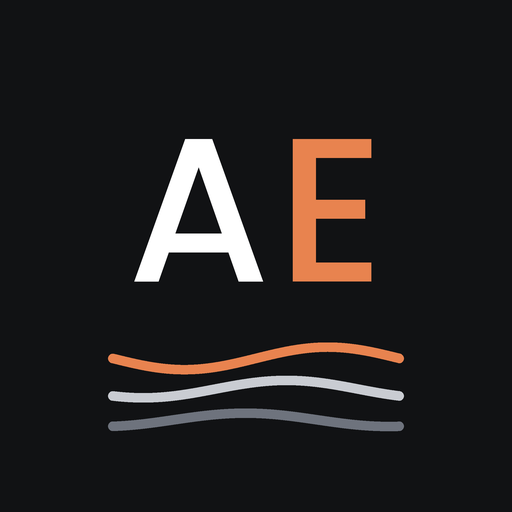
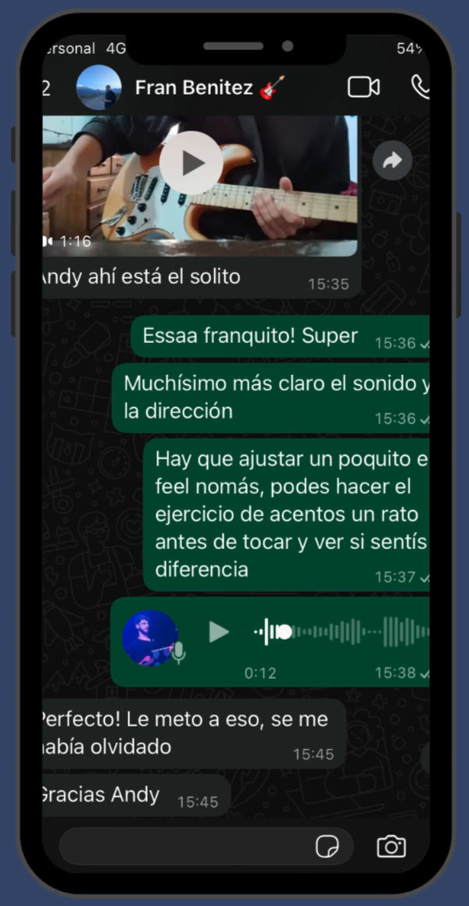
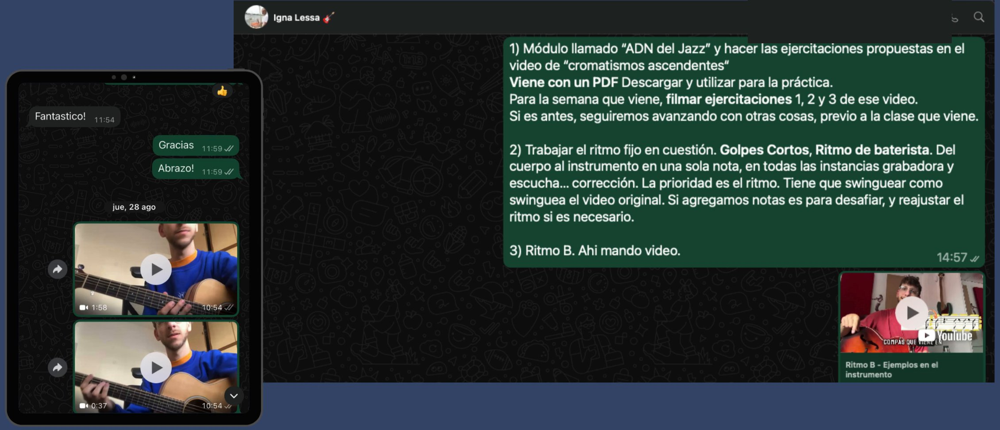

Para aprender a improvisar con Seguridad, Lenguaje y una Narrativa.
Porque la práctica de la improvisación
tiene que ser ajustable.
Tiene que ser elástica.
Practicamos cosas demasiado fáciles…
…o saltamos a cosas demasiado difíciles.
La práctica que te hace crecer de verdad
está en un punto medio entre las dos.
Todas las variables sueltas, al azar: todo se vuelve muy difícil.
Nos enfocamos en una sola cosa por vez,
con parámetros que limitan y bajan la dificultad.
Así usás lo que ya conocés
y lo conectás de nuevas maneras.
Desarrollando tus capacidades como improvisador.
Trabajemos un rato sobre cada parte.
Va a haber que trabajar. ¿Qué querés? Es así.
Conectar la armonía en tiempo real, practicando enlaces de arpegios en vivo. Anticiparse a lo que viene para desarrollar control y libertad en cualquier secuencia armónica.
Vamos a Reconocer, Mecanizar e Integrar los recursos fundamentales del lenguaje del jazz a tu música. Transcribir solos con una profundidad distinta, para aprovecharlos mucho, muuucho más que antes.
Para que ganes control y expresividad al improvisar. Conciencia rítmica para saber de dónde venimos y hacia dónde vamos. Más libertad y capacidad creativa en lo rítmico.
Darle forma y dirección a tus improvisaciones. Contar una idea musical, sostenerla y transformarla sin perder el hilo, para que tus solos conecten con vos y con quien escucha.
Todo el material del programa está en el aula.
No es una lista de videos: es un camino. Vas paso a paso y siempre sabés de dónde venís y hacia dónde vas.
En cada paso tenés la clase, el material y una pregunta: ¿cómo te fue?
Según lo que me contestes, el aula te dice qué hacer.
Hago hincapié en algunas cosas con animaciones…
…para que los detalles que hacen que la práctica funcione bien queden grabados en tu memoria.
Un mismo video puede tener varias ejercitaciones. Las vas haciendo en orden.
Ir a esta parte del videoIr a esta parte del docAsí todo es progresivo y cumplís con cada cosa antes de ir a la siguiente.
Cuando hay que mandarme un video, lo grabás ahí mismo…
…y me llega para darte la devolución.
Lo tenés en la compu y en el celu.
Para practicar donde te quede mejor.

Ajuste ElásticoY a medida que avanzás, se van abriendo los módulos.
El material del aula
te queda de por vida.
Por eso no te preocupes.

